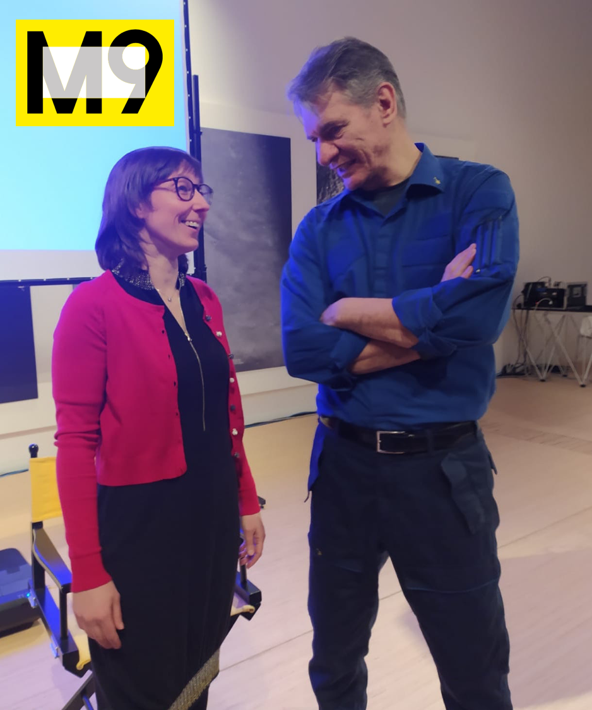
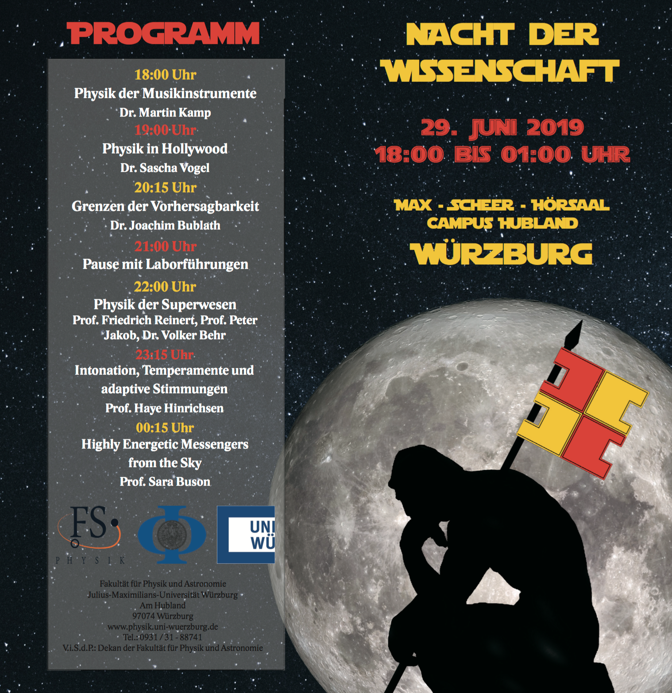

Outreach Events
L'Era dell'Astrofisica Multimessaggera
TEDx Talk
Palazzo della Ragione (Padova IT, 25.05.2019)
In the news (italian):
Nello Spazio. A pochi passi dalla Luna
M9 Museum Venice

M9 Museum, Venezia Mestre IT, 08.02.2020
The italian astronaut
Paolo Nespoli and the astrophysicist Sara Buson sharing with the
audience their space experiences. In the news (italian):
La Scienza sotto la Rocca

Piazza Mazzini, Monselice IT, 20.09.20
Hosted by
P2P LAB.
Nacht Der Wissenschaft
Würzburg DE, 29.06.2019
In the news (german):
Science Bakery & Art Concepts
YES! We can!!
Have you ever dreamed about eating a black hole or gravitational waves blasts?! I have made this possible bringing together my passion for food and science communication. These images and videos show the outcomes of my endevour with the Fermi-LAT cake team. By means of flour, frosting and advanced bakery techniques we have reproduced our favourite science concepts as close as possible to what is our current astrophysical understanding. The final products, i.e. delicious cakes, won the "Science as Food competition", a science outreach event organised every year at the NASA-Goddard Space Flight Center.
Animating Fermi
A Collaboration between Art Students and Astronomers
Bridging Scientific and Artistic Cultures.
In this collaboration between NASA/GSFC scientists and the Maryland Institute College of Arts (MICA, Baltimore), undergraduate animation students team up with scientists from the Fermi Gamma-ray Space Telescope to produce a set of animations on several astronomy topics.
In this article Laurence Arcadias and Robin Corbet describe the process and discuss the results, educational benefits and the cross-cultural experience. These animations are available for free online and may be used for educational and public outreach purposes.
In the 2016 collaboration, I introduced the gravitational lensing effect to the MICA students. The result is the Space Pirates play that gained the “audience award” at the 2016 MICA Animation Festival.
Multimessenger astronomy was the 2019 topic, with focus on neutrinos and gamma rays connection. With a documentary inspired approach, the MICA students depicted a neutrino, a gamma ray, and protons as birds taking a journey from AGN TXS 0506+056 to Earth, where the birds will land upon a new home, "Fermi tree" and "IceCube pond".
Story: Traveling through intergalactic space, Captain G. Nisnel and his crew search for lost treasures. Due to their inferior intelligence, they cannot foresee the dangers lurking behind the galaxies...
by MICA students B. Marques, W. Fair, K. Ericksen, C. Foster.
Scientists: Sara Buson, Roopesh Ojha (NASA/GSFC, UMBC)
MICA Animation Festival 2016: Audience award winner
Interviews
-
Astronomy, Black Holes and our Place in the Universe
Julius Maximilians Universität Würzburg Podcast (english)
Interview with Prof. Dr. Sara Buson from the Department of Astronomy at the University of Würzburg. The discussion deals with her research on black holes, her time at NASA, the importance of space exploation and research, space and astronomy in general, and the human fascination with space and the night sky.
- Bellezza, spazio e futuro: l’intervista alle astrofisiche Patrizia Caraveo e Sara Buson
ioDonna (Corriere della Sera, italian)
Dal macro al micro, dai massimi sistemi del cosmo alla nostra pelle. In cosa ci ispirano i concetti di spazio e futuro nella ricerca delle nuove frontiere dell'antiaging e della cosmesi? Lo abbiamo chiesto a due eccellenze della scienza italiana, le due astrofisiche Patrizia Caraveo e Sara Buson.
-
Sara Buson, tra i migliori ricercatori italiani del Nord America
Il Bo Live (University of Padova, italian):
Il 23 ottobre 2019 l'ISSNAF ha assegnato cinque premi ai migliori cervelli italiani del Nord America. All’ambasciata italiana di Washington sono stati annunciati i vincitori. Ai microfoni del Bo Live abbiamo raggiunto Sara Buson, vincitrice del ISSNAF Award for Young Investigators per scienze ambientali, astrofisica e chimica.